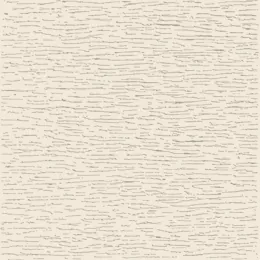
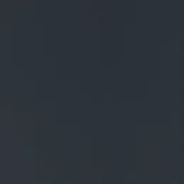
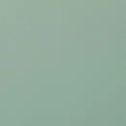
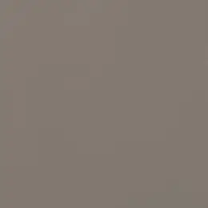
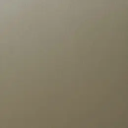
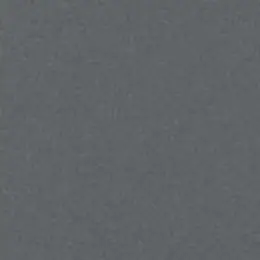
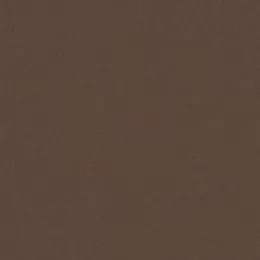

Veelgekozen kleuren
Dit zijn de kleuren waar in de praktijk het vaakst voor wordt gekozen. Ze staan hieronder ook gewoon tussen het volledige assortiment.

Crèmewit / Ice Cream B
RAL 9001 · 46835
Wit / White
RAL 9010 · 9152

Antracietgrijs / Anthracite Grey
RAL 7016
Zwartgrijs / Black Grey
RAL 7021
Dennengroen / Dark Green
RAL 6009 · 6125
Staalblauw / Steel Blue
RAL 5011 · 5150
Effen kleuren (47)
Alle kleuren hieronder hebben een houtnerfstructuur — effen wil hier dus niet vlak zeggen. Gladde en matte uitvoeringen staan bewust niet in dit overzicht. Waar de kleur overeenkomt met een RAL-kleur staat de RAL-code erbij, gevolgd door het Renolit-artikelnummer als dat afwijkt.
Crystal White
47852

Crystal White Ash P
9294
Veelgekozen
Wit / White
RAL 9010 · 9152
Veelgekozen
Crèmewit / Ice Cream B
RAL 9001 · 46835
Light Grey
7251
Agate Grey
RAL 7038
Light Ivory
RAL 1015
Signal Grey
RAL 7004

Chartwell Green
49246
Windsor
46857
Grey
7155
Silver V
9705
Silver D
Moondance C 31 N
Hazy Grey
49124
Kensington Grey
46870

Balmoral
46858

Pyrite
Slate Grey
RAL 7015
Buckingham Grey
46871

Basalt Grey
RAL 7012
Quartz Grey
RAL 7039
Slate Grey
49229
Trompet C 32 N
Veelgekozen
Antracietgrijs / Anthracite Grey
RAL 7016
Black
Gale Grey
49122
Ash C 35 N
Veelgekozen
Zwartgrijs / Black Grey
RAL 7021

Sepia Brown
RAL 8014
Brown
8972
Chocolate Brown
8875
Black Brown
8518
Flemish Gold C 33 N
Ceylon C 34 N
Veelgekozen
Dennengroen / Dark Green
RAL 6009 · 6125
Moss Green
RAL 6005
Monumentengruen
9925
Brilliant Blue
RAL 5007
Dark Blue
5030
Veelgekozen
Staalblauw / Steel Blue
RAL 5011 · 5150
Black Blue
RAL 5004
Wine Red
RAL 3005
Dark Red
3081
geen staalfoto beschikbaar
Champagne
geen staalfoto beschikbaar
Cream White
1379
geen staalfoto beschikbaar
PX Umbra Grey
RAL 7022